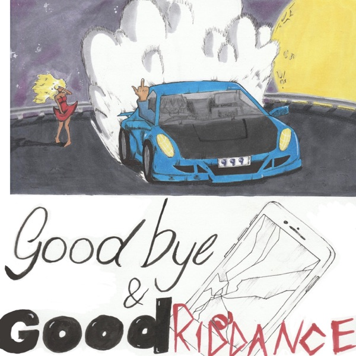
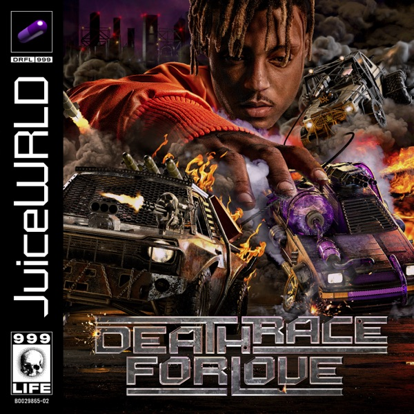
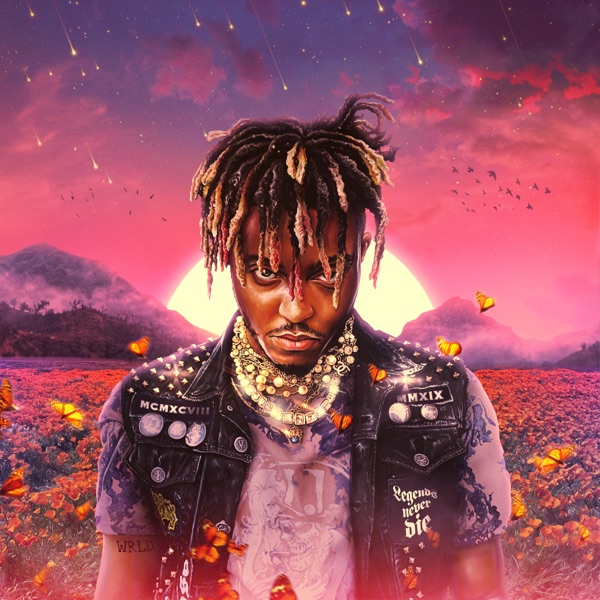
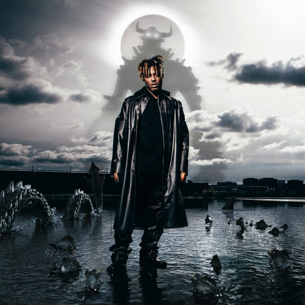
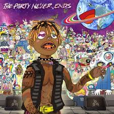

Začátek
První skladby a freestyle videa z Chicaga.
LEGENDS NEVER DIE
Legenda emo rapu. Hlas generace, která se v jeho textech našla. Navždy v našich srdcích.
01 / PŘÍBĚH
Jarad Anthony Higgins (2. 12. 1998 – 8. 12. 2019) z Chicaga. Stal se jednou z nejvýraznějších tváří emo rapu. Míchal hip-hop s melodiemi a kytarami a v textech byl otevřený o bolesti, vztazích i závislostech. Jeho hudba pomohla milionům fanoušků po celém světě cítit se méně sami.
02 / CESTA
První skladby a freestyle videa z Chicaga.
Debutové album Goodbye & Good Riddance mění jeho život.
Album Death Race for Love debutuje na prvním místě.
Jeho hudba dál spojuje miliony lidí po celém světě.
03 / HUDBA

Debutové album
↗
Album č. 1
↗
Posmrtné album
↗
Vzpomínky a emoce
↗
Nová kapitola
↗05 / WORDS
„I still see your shadows in my room."
„Legends never die."
„I'm not afraid to die, I'm afraid to live without you."
06 / LEGACY
Juice WRLD pomáhal lidem cítit se méně sami. Jeho máma založila nadaci Live Free 999, která podporuje duševní zdraví a prevenci závislostí.
Live Free 999 ↗TRACKLIST